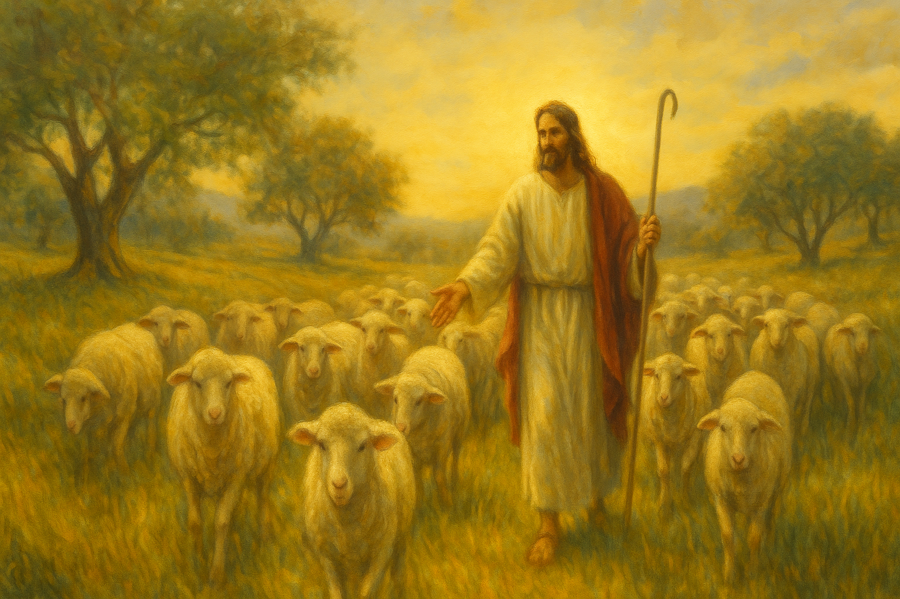
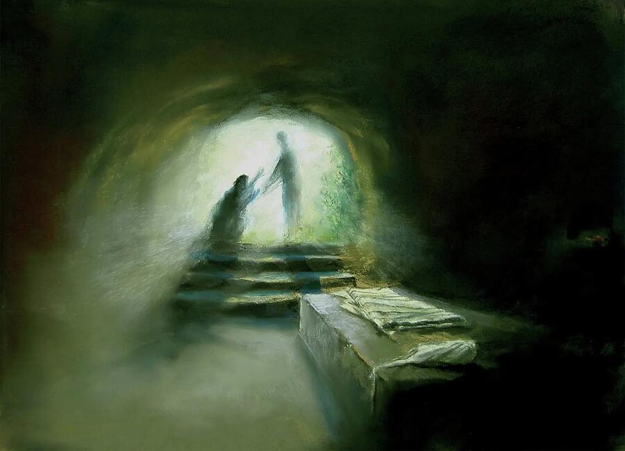

The next step that rounds out faith is action. We learn from the example of Enos how everything started with a sense of yearning in his soul, which led to him acting upon it and experiencing a marvelous spiritual experience. If he hadn't acted upon it, he wouldn't have received the blessings that he did.
1 / 3

"And I, Enos, knew that God could not lie"
The prophet Alma taught that building faith can begin with a simple “desire to believe” (Alma 32:27). Then, for our faith in Jesus Christ to grow, we need to nurture it by learning His words, applying His teachings, and obeying His commandments. Alma taught that as we patiently, diligently nurture the word of God in our hearts, “it shall take root [and become like] a tree springing up unto everlasting life”—thus strengthening our faith.
2 / 3

"...Thy faith hath made thee whole"
"There is good news and bad news here. The bad news is that he still requires our best effort. We must try, we must work—we must do all that we can. But the good news is that having done all we can, it is enough—for now. Together we’ll make progress in the eternities, and eventually we will become perfect—but in the meantime, we are perfect only in a partnership, in a covenant relationship with him. Only by tapping his perfection can we hope to qualify."
(Stephen E. Robinson, “Believing Christ: A Practical Approach to the Atonement” BYU Speeches 1990)
3 / 3
More Holiness Give Me
The Tabernacle Choir at Temple Square, General Conference April 2023